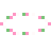
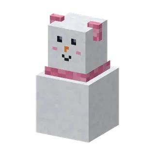
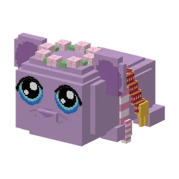

The Knuffeldal has four seasons and a day rhythm: the guhs do something different every hour.
Het Knuffeldal kent vier seizoenen en een dagritme: de guhs doen elk uur iets anders.
SeasonsSeizoenen
The Guhmension now has four seasons of 7 Minecraft days each: lente, zomer, herfst and winter (the chat tells you when one starts; /guhs seizoen shows which one it is). The seizoensbloembakken and slingers on the plein change along, and every season has its own thing to do (right-click a seizoensbloembak to see what): lente: three flowers on a bloembak make a bloesemkransje; zomer: three wheat make a straw zonnehoedje; herfst: jump into the big soft bladerhoopjes (four leaves on a bloembak: bladerhoopjes for at home); winter: three wool make a knus sjaaltje, and a sneeuwguhkopje on two snow blocks makes a sneeuwpopguh. Put them on your guh for the seizoensplakboek (two entries per season). Operators: /guhs seizoen <lente|zomer|herfst|winter>.
De Guhmensie heeft nu vier seizoenen van elk 7 Minecraft-dagen: lente, zomer, herfst en winter (de chat zegt het als er een begint; /guhs seizoen laat zien welk het is). De seizoensbloembakken en -slingers op het plein veranderen mee, en elk seizoen heeft iets eigens om te doen (rechtsklik een seizoensbloembak om te zien wat): lente: drie bloemetjes op een bloembak worden een bloesemkransje; zomer: drie tarwe worden een strooien zonnehoedje; herfst: spring in de grote zachte bladerhoopjes (vier bladeren op een bloembak: bladerhoopjes voor thuis); winter: drie wol worden een knus sjaaltje, en een sneeuwguhkopje op twee sneeuwblokken wordt een sneeuwpopguh. Zet ze op je guh voor het seizoensplakboek (twee dingen per seizoen). Operators: /guhs seizoen <lente|zomer|herfst|winter>.



The day rhythmHet dagritme
The guhs of the Knuffeldal, of the guh villages and your own free-roaming tamed guhs now live by the clock: in the morning they yawn and stretch (the new emote Gapen), during the day they wave at you, in the afternoon they take a nap in a little nest, in the evening they sit by a campfire with marshmallow knabbels, and at night: zzz. Two more new emotes: Zingen and Knuffelen.
De guhs van het Knuffeldal, van de guhdorpen en je eigen vrij rondlopende tamme guhs leven nu op de klok: 's ochtends gapen en rekken ze zich uit (de nieuwe emote Gapen), overdag zwaaien ze naar je, 's middags doen ze een dutje in een nestje, 's avonds zitten ze bij een kampvuur met marshmallowknabbels, en 's nachts: zzz. Nog twee nieuwe emotes: Zingen en Knuffelen.